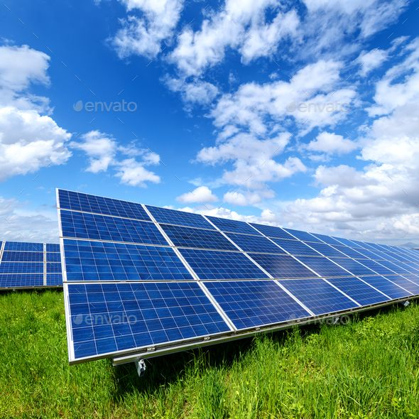
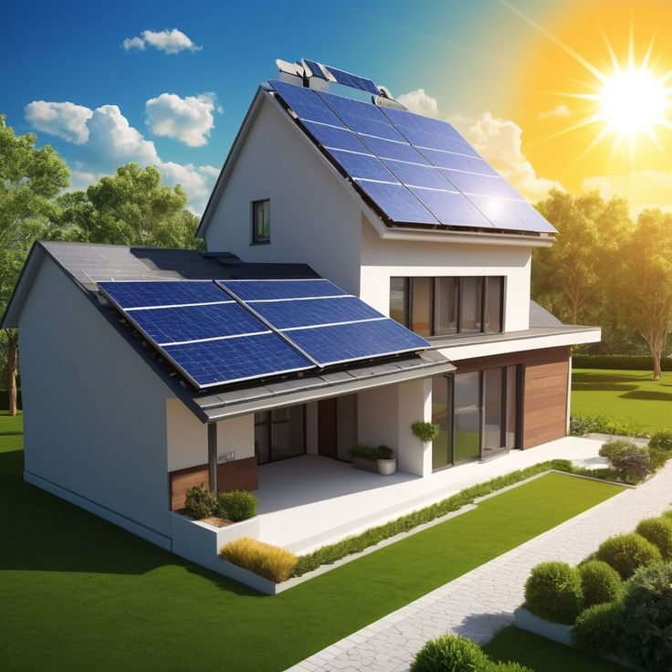

ಇಂಗ್ಲಿಶ್ಕೆಗೆ ನಾನ್ನು ನಿವೆಶಿಸುವೆ ಕ್ಲಿಕ್ ಮಾಡಿ
ENGLISHThe Future of Solar
ಸೌರಶಕ್ತಿಯ ಭವಿಷ್ಯ ಭರವಸೆಯಾಗಿದೆ, ಸುಧಾರಿತ ತಂತ್ರಜ್ಞಾನಗಳಿಂದ ಇದನ್ನು ಇನ್ನಷ್ಟು ಪರಿಣಾಮಕಾರಿಯಾಗಿ ಮತ್ತು ಅಗ್ಗವಾಗಿಸುತ್ತದೆ. ಕಡಿಮೆ ಬೆಳಕಿನ ಪರಿಸ್ಥಿತಿಗಳಲ್ಲೂ ಹೆಚ್ಚಿನ ವಿದ್ಯುತ್ ಉತ್ಪಾದನೆಯನ್ನು ಸಾಧ್ಯವಾಗಿಸುವ ಹೊಸ ತಂತ್ರಜ್ಞಾನಗಳು ಅಭಿವೃದ್ಧಿಯಾಗುತ್ತಿವೆ. ಸೌರ ಬ್ಯಾಟರಿ ಶೇಖರಣಾ ಪರಿಹಾರಗಳು ಉತ್ತಮಗೊಳ್ಳುತ್ತಿವೆ, ಇದರಿಂದ ಹೆಚ್ಚು ಶಕ್ತಿ ಸಂಗ್ರಹಿಸಿ ರಾತ್ರಿ ಅಥವಾ ವಿದ್ಯುತ್ ವ್ಯತ್ಯಯದ ಸಮಯದಲ್ಲಿ ಬಳಸಬಹುದು. ಸ್ಮಾರ್ಟ್ ಗ್ರಿಡ್ಗಳು ಮತ್ತು AI ಆಧಾರಿತ ಶಕ್ತಿ ನಿರ್ವಹಣಾ ವ್ಯವಸ್ಥೆಗಳು ಸೌರಶಕ್ತಿಯ ಬಳಕೆಯನ್ನು ಉತ್ತಮಗೊಳಿಸುತ್ತವೆ ಮತ್ತು ವಿದ್ಯುತ್ ಹಾಳಾಗುವುದನ್ನು ತಡೆಯುತ್ತವೆ. ಪಾರದರ್ಶಕ ಸೌರ ಫಲಕಗಳು ಮತ್ತು ಕಟ್ಟಡಗಳಲ್ಲಿ ಸಂಯೋಜಿಸಬಹುದಾದ ಸೌರ ಸಾಮಗ್ರಿಗಳು, ಮನೆಗಳು ಮತ್ತು ಕಚೇರಿಗಳಲ್ಲಿ ಶಕ್ತಿಯ ಉತ್ಪಾದನೆಯನ್ನು ಬದಲಾಯಿಸುತ್ತವೆ. ಸೌರ ಫಲಕಗಳ ಬೆಲೆ ದಿನೇ ದಿನೇ ಕಡಿಮೆಯಾಗುತ್ತಿದೆ, ಇದರಿಂದ ಹೆಚ್ಚಿನ ಜನರಿಗೆ ಸೌರಶಕ್ತಿ ಸುಲಭವಾಗಿ ಲಭ್ಯವಾಗುತ್ತಿದೆ. ವಿಶ್ವದ ಹಲವಾರು ಸರ್ಕಾರಗಳು ಸೌರಶಕ್ತಿಯ ಬಳಕೆಯನ್ನು ಉತ್ತೇಜಿಸಲು ತೆರಿಗೆ ಸೌಲಭ್ಯ ಮತ್ತು ಪ್ರೋತ್ಸಾಹಗಳನ್ನು ನೀಡುತ್ತಿವೆ. ವಿದ್ಯುತ್ ದರಗಳು ಹೆಚ್ಚುತ್ತಿರುವುದರಿಂದ, ಸೌರಶಕ್ತಿ ಉದ್ದಕಾಲಿಕ ಉಳಿತಾಯ ಮತ್ತು ಶಕ್ತಿ ಸ್ವಾಯತ್ತತೆಗೆ ಉತ್ತಮ ಪರಿಹಾರವಾಗಿದೆ. ಸೌರ ತಂತ್ರಜ್ಞಾನವು ಪೋರ್ಟಬಲ್ ಆಗುತ್ತಿದ್ದು, ಜನರು ಮೊಬೈಲ್ ಚಾರ್ಜರ್ಗಳು ಮತ್ತು ಸೌರಚಾಲಿತ ಸಾಧನಗಳನ್ನು ಎಲ್ಲಿ ಬೇಕಾದರೂ ಬಳಸಬಹುದಾಗಿದೆ. ಸೌರಶಕ್ತಿಗೆ ಹೂಡಿಕೆ ಮಾಡುವ ವಹಿವಾಟುದಾರರು ಕಾರ್ಯಾಚರಣಾ ವೆಚ್ಚದಲ್ಲಿ ಹೆಚ್ಚಿನ ಉಳಿತಾಯವನ್ನು ಕಂಡುಕೊಳ್ಳುತ್ತಾರೆ ಮತ್ತು ತಮ್ಮ ಕಾರ್ಬನ್ ಅಡಚಣೆಯನ್ನು ಕಡಿಮೆ ಮಾಡುತ್ತಾರೆ. ತಯಾರಿಸಲಾಗುತ್ತಿರುವ ತಾಣಚಲಿಸುವ ಸೌರ ಪಾರ್ಕ್ಗಳು ಮತ್ತು ಸೌರ ರಸ್ತೆಗಳು ನವೀಕರಿಸಬಹುದಾದ ಶಕ್ತಿಯ ವ್ಯಾಪ್ತಿಯನ್ನು ವಿಸ್ತರಿಸುತ್ತವೆ. ವಿದ್ಯುತ್ ವಾಹನಗಳೊಂದಿಗೆ ಸೌರಶಕ್ತಿಯ ಸಂಯೋಜನೆ ಸ್ವಚ್ಛ ಮತ್ತು ಸ್ಥಿರತೆಯ ಭವಿಷ್ಯವನ್ನು ನಿರ್ಮಿಸುತ್ತದೆ. ಸೌರಶಕ್ತಿಯಿಂದ ಚಲಿಸುವ ಸ್ಮಾರ್ಟ್ ಮನೆಗಳು ಸ್ವತಃ ಶಕ್ತಿಯನ್ನು ಉತ್ಪಾದಿಸಿ, ಸಂಗ್ರಹಿಸಿ, ಬಳಸಿಕೊಳ್ಳಲು ಸಾಮರ್ಥ್ಯ ಹೊಂದಿರುತ್ತವೆ. ಹವಾಮಾನ ಪರಿವರ್ತನೆಯ ಬಗ್ಗೆ ಜಾಗೃತಿಯು ಹೆಚ್ಚಿದಂತೆ, ಹೆಚ್ಚಿನ ಜನರು ಸೌರಶಕ್ತಿಯ ಕಡೆಗೆ ತಿರುಗಿಕೊಳ್ಳುತ್ತಾರೆ. ಇಂದೇ ಸೌರಶಕ್ತಿಗೆ ಹೂಡಿಕೆ ಮಾಡುವುದು, ಭವಿಷ್ಯದಲ್ಲಿ ಉದ್ದಕಾಲಿಕ ಉಳಿತಾಯ, ಶಕ್ತಿ ಭದ್ರತೆ, ಮತ್ತು ಸ್ವಚ್ಛ ಪರಿಸರವನ್ನು ಖಚಿತಪಡಿಸುತ್ತದೆ.
The Advantages of Solar
ಭಾರತದಲ್ಲಿ ಸೌರ ಶಕ್ತಿಯು ಕಡಿಮೆ ವೆಚ್ಚದ ಮತ್ತು ಸ್ಥಿರಶೀಲ ಶಕ್ತಿಯ ಮೂಲವಾಗಿದ್ದು, ವಿದ್ಯುತ್ ಬಿಲ್ಲುಗಳನ್ನು ಗಣನೀಯವಾಗಿ ಕಡಿಮೆ ಮಾಡುತ್ತದೆ. ವರ್ಷಪೂರ್ತಿ ಲಭ್ಯವಿರುವ ಪ್ರಚಂಡ ಸೌರಶಕ್ತಿಯಿಂದ, ಇದು ವಿಶ್ವಾಸಾರ್ಹ ಮತ್ತು ನವೀಕರಿಸಬಹುದಾದ ಶಕ್ತಿಯ ಪರಿಹಾರವನ್ನು ಒದಗಿಸುತ್ತದೆ. ಸರ್ಕಾರದ ಅನುದಾನಗಳು ಮತ್ತು ಪ್ರೇರಣೆಗಳು ಮನೆಯ ಮಾಲೀಕರು ಮತ್ತು ವ್ಯವಹಾರಗಳಿಗೆ ಸೌರ ಸ್ಥಾಪನೆಗಳನ್ನು ಹೆಚ್ಚು ಪ್ರವೇಶಯೋಗ್ಯವಾಗಿಸುತ್ತವೆ. ಇದಕ್ಕೆ ಕಡಿಮೆ ನಿರ್ವಹಣೆ ಬೇಕಾಗಿದ್ದು, ದೀರ್ಘಕಾಲದ ಉಳಿತಾಯ ಮತ್ತು ಕಾರ್ಯಕ್ಷಮತೆಯನ್ನು ಖಾತ್ರಿಪಡಿಸುತ್ತದೆ. ಸೌರಶಕ್ತಿ ಜೀವಾಶ್ಮ ಇಂಧನಗಳ ಮೇಲಿನ ಅವಲಂಬನೆಯನ್ನು ಕಡಿಮೆ ಮಾಡುತ್ತದೆ ಮತ್ತು ಕಾರ್ಬನ್ ಉತ್ಪತ್ತಿಯನ್ನು ಕಡಿಮೆ ಮಾಡುವ ಮೂಲಕ ಪರಿಸರ ಸ್ನೇಹಿಯಾಗಿರುತ್ತದೆ. ನಿರ್ಬಂಧಿತ ವಿದ್ಯುತ್ ಪೂರೈಕೆಯಿರುವ ದೂರದ ಪ್ರದೇಶಗಳಿಗೆ ಇದು ಶಕ್ತಿಯ ಪ್ರವೇಶವನ್ನು ಒದಗಿಸುತ್ತದೆ. ವ್ಯವಹಾರಗಳು ಕಾರ್ಯಾಚರಣಾ ವೆಚ್ಚವನ್ನು ಕಡಿಮೆ ಮಾಡಿ, ಲಾಭದಾಯಕತೆಯನ್ನು ಹೆಚ್ಚಿಸಬಹುದು. ಇನ್ನೂ ಹೆಚ್ಚಾಗಿ, ಸೌರ ಪ್ಯಾನೆಲ್ಗಳನ್ನು ಸ್ಥಾಪಿಸುವುದರಿಂದ ಆಸ್ತಿಯ ಮೌಲ್ಯ ಹೆಚ್ಚುತ್ತದೆ ಮತ್ತು ಭವಿಷ್ಯದ ಶಕ್ತಿಯ ಭದ್ರತೆಯನ್ನು ಖಚಿತಪಡಿಸುತ್ತದೆ.
Government Support

ಭಾರತ ಸರ್ಕಾರವು ಸೌರಶಕ್ತಿ ಸ್ವೀಕಾರವನ್ನು ಉತ್ತೇಜಿಸಲು ವಿವಿಧ ಯೋಜನೆಗಳ ಅಡಿಯಲ್ಲಿ ಅನುದಾನಗಳನ್ನು ನೀಡುತ್ತದೆ. **PM ಸೂರ್ಯ ಘರ್ ಮುಕ್ತ ವಿದ್ಯುತ್ ಯೋಜನೆ** ಅಡಿಯಲ್ಲಿ, **3 kW** ವರೆಗಿನ ಸೌರ ಪ್ಯಾನೆಲ್ ವ್ಯವಸ್ಥೆಗಳಿಗೆ **40%** ಮತ್ತು **3 kW-10 kW** ನಡುವೆ **20%** ಸಬ್ಸಿಡಿ ನೀಡಲಾಗುತ್ತದೆ. **PM-KUSUM** ಯೋಜನೆಯ ಮೂಲಕ, ರೈತರು ಸೌರ ಪಂಪುಗಳು ಮತ್ತು ಗ್ರಿಡ್-ಜೋಡಿತ ಸೌರ ಘಟಕಗಳಿಗೆ ಅನುದಾನ ಪಡೆಯಬಹುದು. ಉದ್ಯಮಗಳು ಮತ್ತು ವಾಣಿಜ್ಯ ಕ್ಷೇತ್ರಗಳು ಸೌರ ಹೂಡಿಕೆಗೆ ತೆರಿಗೆ ರಿಯಾಯಿತಿ ಮತ್ತು ವೇಗವರ್ಧಿತ ಅಮೋರ್ಚನ ಸೌಲಭ್ಯ ಪಡೆಯಬಹುದು. ಹಲವಾರು ರಾಜ್ಯ ಸರ್ಕಾರಗಳು ಕೇಂದ್ರ ಯೋಜನೆಗಳ ಜೊತೆಗೆ ಹೆಚ್ಚುವರಿ ಸಬ್ಸಿಡಿ ಮತ್ತು ಪ್ರೋತ್ಸಾಹಗಳನ್ನು ನೀಡುತ್ತವೆ. ನೆಟ್ ಮೀಟರಿಂಗ್ ನೀತಿಯ ಮೂಲಕ, ಬಳಕೆದಾರರು ಹೆಚ್ಚುವರಿ ಸೌರಶಕ್ತಿಯನ್ನು ಗ್ರಿಡ್ಗೆ ಮಾರಾಟ ಮಾಡಬಹುದು, ಇದರಿಂದ ವಿದ್ಯುತ್ ಖರ್ಚು ಮತ್ತಷ್ಟು ಕಡಿಮೆಯಾಗುತ್ತದೆ. ಸಬ್ಸಿಡಿ ಅನುಮೋದನೆ ನಂತರ ಗ್ರಾಹಕರ ಬ್ಯಾಂಕ್ ಖಾತೆಗೆ ನೇರವಾಗಿ ವರ್ಗಾಯಿಸಲಾಗುತ್ತದೆ. ವಿವಿಧ ಹಣಕಾಸು ಯೋಜನೆಗಳ ಅಡಿಯಲ್ಲಿ ಸೌರ ಪ್ರಾಜೆಕ್ಟ್ಗಳಿಗೆ ಬಡ್ಡಿಯಿಲ್ಲದ ಅಥವಾ ಕಡಿಮೆ ಬಡ್ಡಿದರದ ಸಾಲಗಳು ಲಭ್ಯವಿವೆ. ಈ ಅನುದಾನಗಳು ಸೌರಶಕ್ತಿಯನ್ನು ಹೆಚ್ಚು ಲಭ್ಯವನ್ನಾಗಿ ಮಾಡಲು ಮತ್ತು ವ್ಯಾಪಕವಾಗಿ ಬಳಸಲು ಉತ್ತೇಜಿಸುತ್ತವೆ. ಸರ್ಕಾರದ ಬೆಂಬಲದೊಂದಿಗೆ, ಭಾರತದಲ್ಲಿ ಸೌರಶಕ್ತಿ ಕಡಿಮೆ ವೆಚ್ಚದ ಮತ್ತು ಸ್ಥಿರಶೀಲ ಶಕ್ತಿಯ ಪರಿಹಾರವಾಗಿ ಬೆಳೆಯುತ್ತಿದೆ.
Importance of Service
ಗುಣಮಟ್ಟದ ಸೇವೆಯು ಗ್ರಾಹಕರ ತೃಪ್ತಿಗೆ ಮತ್ತು ದೀರ್ಘಕಾಲೀನ ನಂಬಿಕೆಗೆ ಮೂಲಭೂತ ಅಂಶವಾಗಿದೆ. ಚೆನ್ನಾಗಿ ನಿರ್ವಹಿತ ಸೌರ ಘಟಕವು ಗರಿಷ್ಠ ಕಾರ್ಯಕ್ಷಮತೆ, ದೀರ್ಘಾಯುಷ್ಯ ಮತ್ತು ವೆಚ್ಚ ಉಳಿತಾಯವನ್ನು ಖಚಿತಪಡಿಸುತ್ತದೆ. **ಸೌರ ಎನರ್ಜಿ**ಯಲ್ಲಿ, ನಾವು ತಜ್ಞ ಸ್ಥಾಪನೆಯ ಮೂಲಕ ಸುಗಮವಾದ ಸೌರ ಪರಿಹಾರಗಳನ್ನು ಒದಗಿಸುತ್ತೇವೆ. ನಮ್ಮ ನಿಷ್ಠಿತ ತಂಡವು ನಿಯಮಿತ ನಿರ್ವಹಣೆ ಮತ್ತು ತ್ವರಿತ ದೋಷ ನಿವಾರಣೆಯನ್ನು ನೀಡುವ ಮೂಲಕ ನಿಮ್ಮ ವ್ಯವಸ್ಥೆಯು ಸರಾಗವಾಗಿ ಕಾರ್ಯನಿರ್ವಹಿಸುವಂತೆ ಮಾಡುತ್ತದೆ. ಗ್ರಾಹಕರ ಬೆಂಬಲವನ್ನು ನಾವು ಮೊದಲ ಆದ್ಯತೆಯಾಗಿ ಪರಿಗಣಿಸುತ್ತೇವೆ ಮತ್ತು ಯಾವುದೇ ಸಮಸ್ಯೆಗಳಿಗೆ ತ್ವರಿತ ಮತ್ತು ವೃತ್ತಿಪರ ಸಹಾಯವನ್ನು ಒದಗಿಸುತ್ತೇವೆ. ಸ್ಥಾಪನೆಯಿಂದ ಹೊರತುಪಡಿಸಿ, ನಮ್ಮ ಸೇವೆಯು ದೀರ್ಘಕಾಲದ ಕಾರ್ಯಕ್ಷಮತೆಯನ್ನು ಖಚಿತಪಡಿಸುತ್ತದೆ. ಸುಧಾರಿತ ತಂತ್ರಜ್ಞಾನ ಮತ್ತು ನುರಿತ ತಂತ್ರಜ್ಞರೊಂದಿಗೆ, ನಾವು ಅಪರೂಪದ ವಿಶ್ವಾಸಾರ್ಹತೆ ಮತ್ತು ಕಾರ್ಯಕ್ಷಮತೆಯನ್ನು ಒದಗಿಸುತ್ತೇವೆ. ಗ್ರಾಹಕರು ತಮ್ಮ ಸೌರ ವ್ಯವಸ್ಥೆಯ ಸಂಪೂರ್ಣ ಶಕ್ತಿಯನ್ನು ಅರ್ಥಮಾಡಿಕೊಳ್ಳಲು ಸುಲಭವಾದ, ಪಾರದರ್ಶಕ ಸೇವೆಯನ್ನು ಒದಗಿಸುವುದು ನಮ್ಮ ನಂಬಿಕೆ. ನಮಗೆ ಆಯ್ಕೆ ನೀಡುವುದು ಶಾಂತಿಯುತವಾಗಿ ಸೌರಶಕ್ತಿಯನ್ನು ಸ್ವೀಕರಿಸುವಂತೆ ಮಾಡುವುದು. ** ಸೌರ ಎನರ್ಜಿ** ಶ್ರೇಷ್ಠ ಸೇವೆಯನ್ನು ಒದಗಿಸಲು ಬದ್ಧವಾಗಿದೆ, ಶುದ್ಧ ಶಕ್ತಿಯನ್ನು ಸುಲಭವಾಗಿ ಮತ್ತು ನಿರಾಳತೆಯಿಂದ ಪಡೆಯಲು ಸಹಾಯ ಮಾಡುತ್ತದೆ